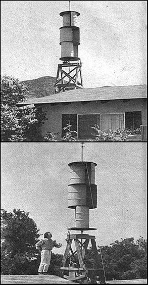
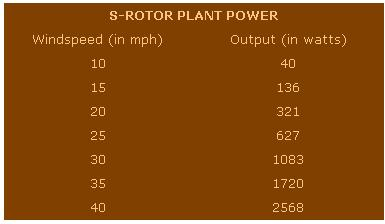

Here are a few comments and corrections pertaining to my article "The Savonius Super Rotor!" in MOTHER NO. 26.[1] In case you were wondering, that's not me with the shirt off in that picture on page 78 . . . that's David House (resident and founder of Earthmind and author of the book Methane Systems ), as photographed late in November. Yep, it were cold, but then we are real hardy folk, too.
[2] My comparison of the Stuart mill and the S-rotor omitted any mention of feathering: twisting of a conventional windplant's propeller blades to lower the device's rotational speed in high winds. (See the Plowboy Interview in MOTHER VO. 24 for a discussion of the subject-MOTHER.)
Feathering is a necessary precaution in wind-charger design for a number of reasons. First-whenever a fixed gear ratio is used-some such governing arrangement is needed to prevent the alternator/generator from exceeding its maximum rated output (current). In a propeller-driven unit, however, the prop itself is a factor in determining at what windspeed feathering must occur. The problems involved may be described in terms of balance, structural design and blade tip stresses.
[a] Balance-as I mentioned in my article-is always more important (or critical) at higher rotational speeds than at lower rpm's. If a propeller is allowed to exceed its "operating range", therefore, dangerous vibrations can be set up.
[b] The structural design of a propeller, and the materials of which it's made, also determine the device's upper rotational speed beyond which centrifugal force will pull it apart.
[c] Tip stresses occur at higher windspeeds . . . but are rather independent of whether or not the propeller is turning. This is one reason why "braking" a fan to a stop in a tempest won't help it very much.
All these problems of propeller-driven units are irrelevant to the S-rotor. Since the Savonius device never achieves high rotational speed, balancing is not critical and centrifugal force won't pull the installation apart. In addition, a runaway S-rotor will soon begin to spoil itself because its own wings get in one another's way at higher rpm's.
[3] I'd like to recommend an additional source of information on battery maintenance: A good booklet entitled The Storage Battery (Lead-Acid): Fundamental Principles, Operation, and Care is available for $1.00 from Exide Power Systems, ESB Inc., Philadelphia, Pennsylvania 19120.
[4] The table on page 80 contains a number of errors. First, the figures are for an 11 mph average annual windspeed . . . not 8 mph, as I indicated. Second, the column heading "Normal output (in watts)" should have read " Maximum normal output in watts", since the data represent highest wind situations.
The following revised chart is a more accurate indication of output at various windspeeds. Note that this information is correct only if the generator-or array of generators-is capable of delivering the higher wattages.
[5] Reminder: A collection of detailed material on the construction and operation of a low-cost S-rotor may be ordered from Earthmind, 26510 Josel Drive, Saugus, California 91350. (A paper on our testing program for lead-acid batteries is also available and will be included on request.) The cost of the package is $7.50 . . . please make all checks and money orders payable to Earthmind. And remember, we'll refund $3.00 of that amount to any buyer who returns to us a photo and description of his completed Savonius unit.
Please note, though, that we've lost a couple of people here at Earthmind and are postponing research on the S-rotor unit that uses up to four alternators. The plans we're selling are for a wind-machine hooked up to one alternator, and the plant's output is therefore determined solely by its rating (i.e., a 60-amp unit will deliver only 720 watts, a 130-amp unit only 1,500). If you were thinking of writing us about the multialternator system-or have already done so-we may not be able to answer your questions at this time. As a purchaser of our plans, however, you automatically subscribe to a newsletter we'll send out when we've developed the design (we're calling it Windspinner I).
We're also working on improved "wings", and our information package includes instructions for an alternative model which allows interchange of the wind-catching mechanism without lowering the entire assembly . . . for the benefit of folks who wish to upgrade their machines when the new information becomes available.
One last word: There's a lot happening at Earthmind apart from the S-rotor project. Send us a stamped, self-addressed envelope if you'd like to see our list of publications.
|
 |
 |
|